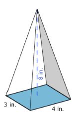
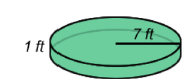
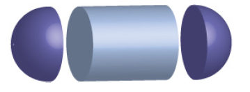
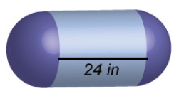
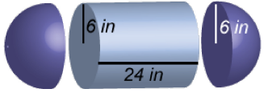
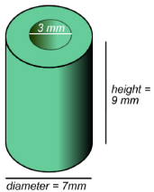

Chapter 3: Measurements & Conversions
Section 3.2: Volumes of Solids
Learning Objective(s)
- Identify geometric solids.
- Find the volume of geometric solids.
- Find the volume of a composite geometric solid.
Introduction
Living in a two-dimensional world would be pretty boring. Thankfully, all of the physical objects that you see and use every day — computers, phones, cars, shoes — exist in three dimensions. They all have length, width, and height. (Even very thin objects like a piece of paper are three-dimensional. The thickness of a piece of paper may be a fraction of a millimeter, but it does exist.)
In the world of geometry, it is common to see three-dimensional figures. In mathematics, a flat side of a three-dimensional figure is called a face. Polyhedrons are shapes that have four or more faces, each one being a polygon. These include cubes, prisms, and pyramids. Sometimes you may even see single figures that are composites of two of these figures.
Identifying Solids
The table below summarizes the six common geometric solids you will work with, along with a definition and illustration of each.
| Name | Definition | Shape |
|---|---|---|
| Cube | A six-sided polyhedron that has congruent squares as faces. | |
| Rectangular Prism | A polyhedron that has three pairs of congruent, rectangular, parallel faces. | |
| Pyramid | A polyhedron with a polygonal base and a collection of triangular faces that meet at a point. | |
| Cylinder | A solid figure with a pair of circular, parallel bases and a round, smooth face between them. | |
| Cone | A solid figure with a single circular base and a round, smooth face that diminishes to a single point. | |
| Sphere | A solid, round figure where every point on the surface is the same distance from the center. |
Notice the different names used for these figures. A cube is different from a square — a cube has three dimensions, while a square only has two. Likewise, you would describe a shoebox as a rectangular prism (not simply a rectangle), and the ancient structures of Egypt as pyramids (not triangles).
Example
A three-dimensional figure has the following properties:
- It has a rectangular base.
- It has four triangular faces.
What kind of solid is it?

Solution
A rectangular base tells us the figure must be a cube, rectangular prism, or pyramid. Since the faces are triangular rather than rectangular, it must be a pyramid.
Volume
Recall that perimeter measures one dimension (length), and area measures two dimensions (length and width). To measure the amount of space a three-dimensional figure takes up, you use another measurement called volume.
To visualize what "volume" measures, imagine stacking identical 1×1×1 cubes inside a rectangular prism (like an empty shoebox) with no gaps. If you counted the number of cubes that fit inside, you would have its volume. Volume is measured in cubic units — for example, cubic inches (in³) or cubic meters (m³).
A much easier way to find the volume is to use geometric formulas. The table below lists the volume formula for each of the six common solids.
| Name | Shape | Volume Formula |
|---|---|---|
| Cube a = side length |
\(V = a \cdot a \cdot a = a^3\) | |
| Rectangular Prism l = length, w = width, h = height |
\(V = l \cdot w \cdot h\) | |
| Pyramid l = length, w = width, h = height |
\(V = \dfrac{l \cdot w \cdot h}{3}\) | |
| Cylinder r = radius, h = height |
\(V = \pi \cdot r^2 \cdot h\) | |
| Cone r = radius, h = height |
\(V = \dfrac{\pi \cdot r^2 \cdot h}{3}\) | |
| Sphere r = radius |
\(V = \dfrac{4}{3}\pi r^3\) |
As you look through the formulas, you may notice some patterns. The volume of a cylinder is the area of its circular base (\(\pi r^2\)) times its height — just like the volume of a rectangular prism is the area of its rectangular base (\(l \cdot w\)) times its height. The cone and pyramid formulas follow the same idea, but are divided by 3. Looking for these patterns can help you remember which formula goes with which solid.
Applying the Formulas
To calculate the actual volume of a given shape, substitute the solid's dimensions into the formula and calculate. Remember to always include cubic units in your answer.
Example
Find the volume of a cube with side lengths of 6 meters.
Solution
Identify the formula for a cube: \(V = a^3\), where \(a\) is the side length. Substitute \(a = 6\):
\[V = 6 \cdot 6 \cdot 6 = 6^3 = 216\]Volume = 216 meters³
Example
Find the volume of the shape shown below.
Solution
The figure has a rectangular base and rises to a point — it is a pyramid. Use the formula \(V = \dfrac{l \cdot w \cdot h}{3}\) with \(l = 4\), \(w = 3\), \(h = 8\):
\[V = \frac{4 \cdot 3 \cdot 8}{3} = \frac{96}{3} = 32\]The volume of the pyramid is 32 inches³.
Example
Find the volume of the shape shown below. Use 3.14 for \(\pi\) and round to the nearest hundredth.

Solution
The figure has a circular base and uniform height — it is a cylinder. Use the formula \(V = \pi \cdot r^2 \cdot h\) with \(r = 7\) and \(h = 1\):
\[V = \pi \cdot 7^2 \cdot 1 = \pi \cdot 49 = 49\pi \approx 153.86\]The volume is \(49\pi\) or approximately 153.86 feet³.
Self Check A
Find the volume of a rectangular prism that is 8 inches long, 3 inches wide, and 10 inches tall.
Use the formula \(V = l \cdot w \cdot h\):
\[V = 8 \cdot 3 \cdot 10 = 240\text{ inches}^3\]Composite Solids
Composite geometric solids are made from two or more geometric solids combined. You can find the volume of these solids as long as you can identify the individual solids that make up the composite shape.
Look at the image of a capsule below. Each end is a half-sphere. What solids can you break this shape into?

You can break it into a cylinder and two half-spheres:

Two half-spheres form one whole sphere, so if you know the volume formulas for a cylinder and a sphere, you can find the volume of this capsule.
Example
If the radius of the spherical ends is 6 inches, find the volume of the solid below. Use 3.14 for \(\pi\). Round your final answer to the nearest whole number.

Solution

This capsule is a cylinder with a half-sphere on each end. The two half-spheres combine to form one whole sphere. Identify the formulas and dimensions:
- Cylinder: \(V = \pi \cdot r^2 \cdot h\), with \(r = 6\) and \(h = 24\)
- Sphere: \(V = \dfrac{4}{3}\pi r^3\), with \(r = 6\)
Volume of the cylinder:
\[V = \pi \cdot 6^2 \cdot 24 = \pi \cdot 36 \cdot 24 = 864\pi \approx 2{,}712.96\text{ in}^3\]Volume of the sphere:
\[V = \frac{4}{3}\pi \cdot 6^3 = \frac{4}{3}\pi \cdot 216 = 288\pi \approx 904.32\text{ in}^3\]Total volume of the capsule:
\[2{,}712.96 + 904.32 \approx 3{,}617.28 \approx 3{,}617\text{ in}^3\]The volume of the capsule is \(1{,}152\pi\) or approximately 3,617 inches³.
Self Check B
A machine takes a solid cylinder with a height of 9 mm and a diameter of 7 mm, and bores a hole all the way through it. The hole has a diameter of 3 mm. Find the volume of the remaining solid.

Find the volume of the full cylinder, then subtract the volume of the smaller bored-out cylinder. The outer radius is \(\frac{7}{2} = 3.5\) mm and the inner radius is \(\frac{3}{2} = 1.5\) mm, with \(h = 9\) mm for both.
\[V = (\pi \cdot 3.5^2 \cdot 9) - (\pi \cdot 1.5^2 \cdot 9) \approx 346.36 - 63.62 \approx 282.74 \approx 282.6\text{ mm}^3\]Summary
Three-dimensional solids have length, width, and height. You use a measurement called volume to figure out the amount of space these solids take up. To find the volume of a specific geometric solid, apply the volume formula for that solid. Sometimes you will encounter composite geometric solids — solids that combine two or more basic shapes. To find the volume of these, identify the simpler solids that make up the composite figure, find the volumes of those solids individually, and combine them as needed.